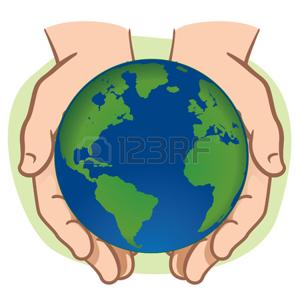
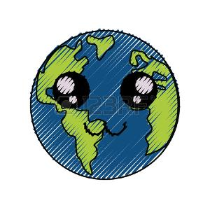
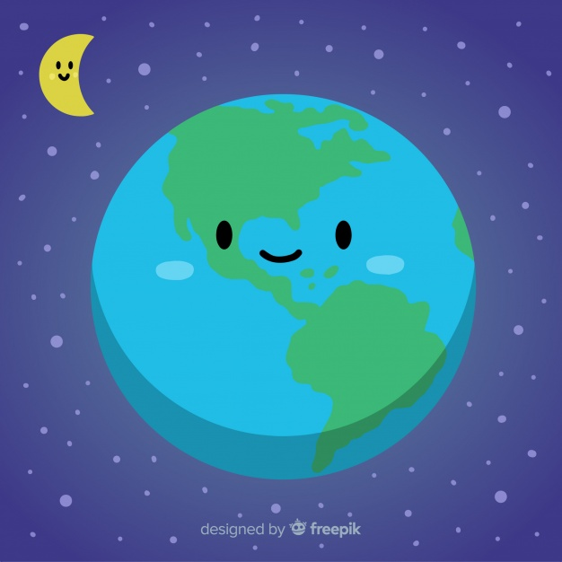
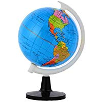
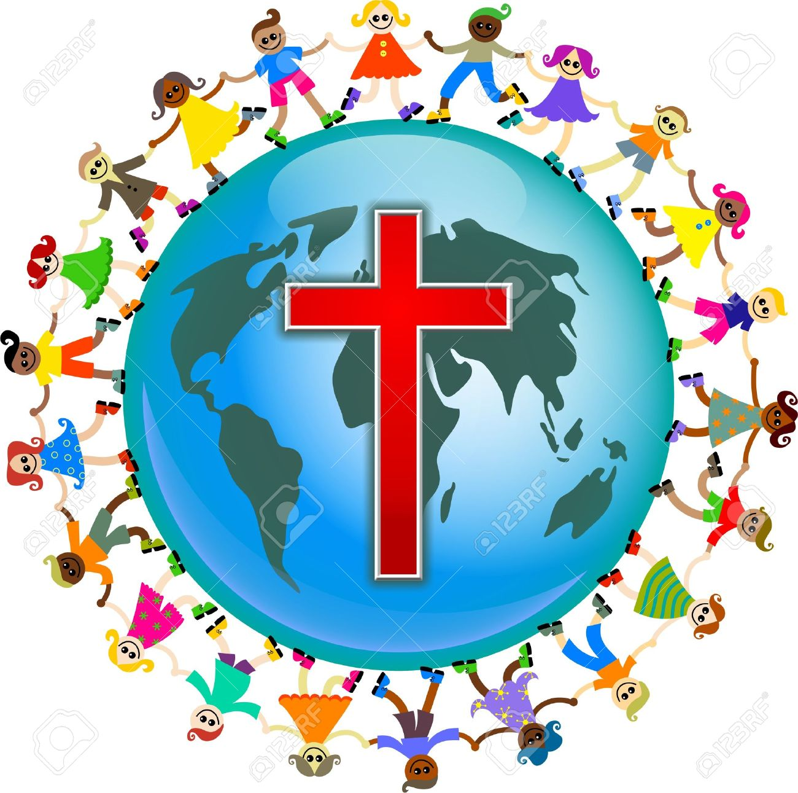
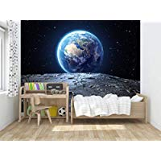

Dia Internacional de la tierra 22 de abril
Realizado por:
Guadalupe Rojano Mendez
4°"H"
Especialidad:
Programacion
Submodulo:
Desarrolla aplicaciones Moviles
Docente:
Lic.Jose Antonio Gomez Hernandez
4°"H"
Programacion
Desarrolla aplicaciones Moviles
Lic.Jose Antonio Gomez Hernandez
Celebramos el dia internacional de la madre tierra para recordar que el planeta y sus ecosistemas nos dan la vida y el sustento. con este dia,asumimos, ademas, la responsabilidad colectiva, como nos recordaba la declaracion de Rio de 1992, de fomentar esta armonia con la naturaleza y madre tierra.
Este dia nos brinda tambien la oportunidad de concientizar a todos los habitantes del planeta acerca de los problemas que afectan a la tierra y a las diferentes formas de vida que en el se desarrollan
El Día de la Tierra es un día festivo celebrado en muchos países el 22 de abril. Su promotor, el senador estadounidense Gaylord Nelson, instauró este día para crear una conciencia común a los problemas de la contaminación, la conservación de la biodiversidad y otras preocupaciones ambientales para proteger la Tierra.
y con el objetivo de alcanzar un justo equilibrio entre las necesidades económicas, las sociales y las ambientales de las generaciones presentes y futuras, y para promover la armonía con la naturaleza y la Tierra. La Tierra es nuestro hogar y el hogar de todos los seres vivos. La Tierra misma está viva. Somos partes de un universo en evolución. Somos miembros de una comunidad de vida interdependiente con una magnificente diversidad de formas de vida y culturas. Nos sentimos humildes ante la belleza de la Tierra y compartimos una reverencia por la vida y las fuentes de nuestro ser...

El domingo pasado 22 de abril se celebró el Día Internacional de la Madre Tierra, desde la CEDU participamos a través de la difusión y compromiso en la búsqueda de un justo equilibro entre las necesidades económicas, sociales y ambientales de las generaciones presentes y futuras, promoviendo una cultura armónica con la naturaleza y Madre Tierra.
«Madre Tierra» es una expresión común utilizada para referirse al Planeta Tierra en diversos países y regiones, lo que demuestra la interdependencia existente entre los seres humanos, las demás especies vivas y el planeta que todos habitamos.
La Tierra y sus ecosistemas son nuestro hogar. Para alcanzar un justo equilibrio entre las necesidades económicas, sociales y ambientales de las generaciones presentes y futuras, es necesario promover la armonía con la naturaleza y el planeta.

Este diálogo interactivo es una buena plataforma para tratar temas como la producción sostenible y los patrones de consumo en la Armonía con la naturaleza. Asimismo,
el diálogo quiere fomentar que los ciudadanos y las sociedades se conciencien sobre cómo se relacionan y cómo pueden relacionarse con el mundo natural;
al mismo tiempo, pretende mejorar los cimientos éticos de la relación entre la humanidad y la Tierra, en términos de desarrollo sostenible.
La gestión integrada de paisajes requiere comprender los diferentes impactos del uso de la tierra y equilibrar los intereses a menudo contradictorios de los diferentes grupos involucrados.
Imaginemos que usted forma parte del gobierno del país X en África subsahariana. Desea cumplir con el Objetivo de Desarrollo Sostenible No. 1 que reza: acabar con la pobreza en todas sus formas en todas partes".
Sin embargo, es consciente de la necesidad de implementar todos los 17 Objetivos, incluido el Objetivo 15, que busca: "Gestionar sosteniblemente los bosques, luchar contra la desertificación, detener e invertir la degradación de las tierras y detener la pérdida de biodiversidad.